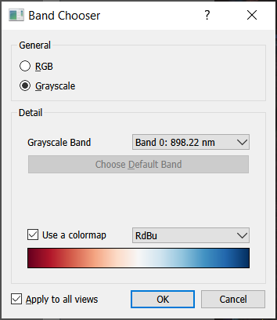
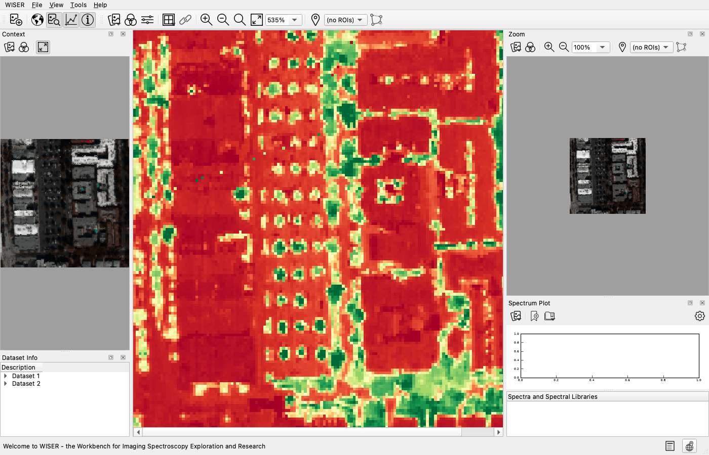
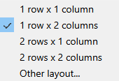
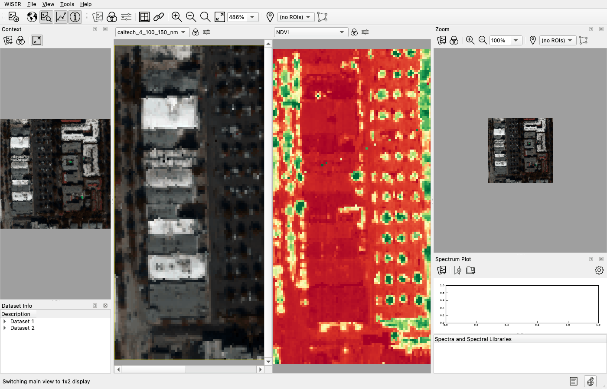

Display and Contrast Stretch#
This page covers everything that decides what you see: which bands are drawn, and how their values are mapped to color. None of it changes the underlying data: spectra, band math and every analysis tool read the raw values, never the stretched display values.
Choosing bands#
The band chooser button, on the main toolbar and above each panel in grid view, controls which bands are displayed.

RGB draws three bands as red, green and blue. Grayscale draws one band, optionally through a colormap.
Two shortcuts fill the bands in for you:
Choose Default Bands — the combination named in the data file’s own header. Disabled when the file names none.
Choose Visible-Light Bands — the bands nearest the red, green and blue wavelengths configured in WISER’s preferences. Disabled when the dataset has no wavelength information, or none in the visible range.
Apply to all views applies your choice to every pane and panel showing that dataset; untick it to change one panel only.
Colormaps#
In grayscale mode a colormap maps the single band’s values to color. Any Matplotlib colormap is available, with a preview.


Choose one that suits the quantity:
Data |
Colormap family |
Examples |
|---|---|---|
A quantity with a meaningful zero or midpoint (an index, a difference) |
Diverging |
|
A quantity that only increases (band depth, abundance, radiance) |
Sequential |
|
Class labels (K-means output, a classification) |
Categorical |
|


Warning
A rainbow colormap such as jet on continuous data invents visual boundaries
where the data has none, and is unreadable to a large fraction of people with
color-vision deficiency. Use a perceptually uniform sequential map such as
viridis instead.
Grid view and linking#


The grid button splits the main window into a grid of any dimensions, so you can view several datasets at once, such as a result next to its input, or several band combinations of the same scene.


In grid view the dataset chooser, band chooser and contrast-stretch controls move from the main toolbar to a strip above each panel.
The link button ties the panels together: pan or zoom one and the others follow. Every pair of displayed datasets must be linkable. Two georeferenced datasets (each with a geotransform and a spatial reference system) are linked by ground location, so they must overlap on the ground. Otherwise two datasets are linked pixel for pixel, which requires the same width and height.
The spectrum plot has its own control, at its top left, for choosing which dataset it reads from. Pin it to one dataset and clicking any linked panel gives you that dataset’s spectrum at the corresponding pixel (the same ground location when both are georeferenced). This is how you compare an original cube against a smoothed or transformed version at the same location.
Contrast stretch#
Band values are rarely spread evenly across their range, so mapping them directly to 0–255 usually produces a flat, dark image. The contrast stretch decides the mapping.

You get one histogram per displayed channel, with the current endpoints marked. Changes apply to the image immediately. OK keeps the result; Cancel discards it.
Stretch types#
Full Linear Stretch — maps each band’s own minimum and maximum to 0 and 255. Usually too flat to be useful, because a single bright outlier compresses everything else.
Linear Stretch — maps a range [low, high] you choose to 0–255, clipping
outside it. Set the endpoints with the sliders or by typing values. The 2.5%
linear and 5% linear buttons choose the endpoints for you, excluding that
percentage of extreme values split evenly between the tails. A 2.5% linear
stretch is the right default for almost any scene.
Equalize Stretch — histogram equalization. Redistributes values so the output is uniformly dense across the display range, maximizing apparent detail everywhere but destroying any linear relationship between brightness and value. Good for inspection, wrong for a figure whose grayscale readers will interpret.
Decorrelation Stretch — available only in RGB mode, since it is a cross-band transform. It computes the covariance of the three display bands, eigendecomposes it, stretches along the principal axes, and rotates back.
When to reach for the decorrelation stretch
Adjacent bands of a hyperspectral cube are highly correlated, so an RGB composite of three nearby bands comes out nearly gray no matter how you stretch the channels individually. The information is in the small differences between them, and a per-channel stretch cannot expose it. A decorrelation stretch exaggerates exactly those differences and turns a gray image into a strongly colored one where color tracks spectral shape.
It is standard practice for thermal-infrared imagery and for SWIR composites over altered terrain. Treat the colors as qualitative: they are a rotated, rescaled coordinate system, not radiance.
In RGB mode all three channels use the same stretch type: you cannot mix a linear red channel with an equalized green one. The parameters of each channel are independent.
A known rough edge
Applying a stretch and then changing the same view between Grayscale and RGB leaves the dialog’s channel state out of step with the view’s band count, and reopening it raises an error. Set your bands before stretching, or reopen the dataset, until that is fixed.
Conditioners#
A conditioner is applied to the normalized data before the stretch:
None — identity
Square root —
sqrt(x)forxin [0, 1]; brightens the dark endLogarithmic —
log₂(x + 1); brightens the dark end more strongly
Use one when values are concentrated at the low end and you want detail in the shadows without blowing out the highlights.
Minimum and maximum limits#
The Minimum and Maximum boxes for each channel restrict which values are considered at all.
Important
Values outside the min/max limits are filtered out, not clamped. They are excluded from the histogram, which means excluded from the calculation of an N% linear stretch and of an equalization. This is what the control is for: set a maximum below your cloud tops and the stretch is computed on the ground rather than on the clouds.
Use it when a dataset has no data ignore value, or when a computed result has a huge theoretical range but a narrow interesting one. An example is an NDVI over a full-size flight line, where the scene edges drag the minimum far below the real range and flatten the whole scene to one color.
Link sliders across all channels and Apply minimum/maximum values across all channels make the same change to every channel at once.
How display values are computed#
For each displayed channel, in order:
Band data is normalized to floating point in [0.0, 1.0], as 32-bit float unless the input is 64-bit. Min/max limits are not applied here; they only affect the histograms used to configure the stretch.
The conditioner is applied: normalized in, normalized out.
The stretch is applied: normalized in, normalized out.
The result is multiplied by 255 and cast to an 8-bit unsigned integer.
Values flagged by the dataset’s data ignore value become NaN before any of this, and every stretch calculation ignores NaN throughout.